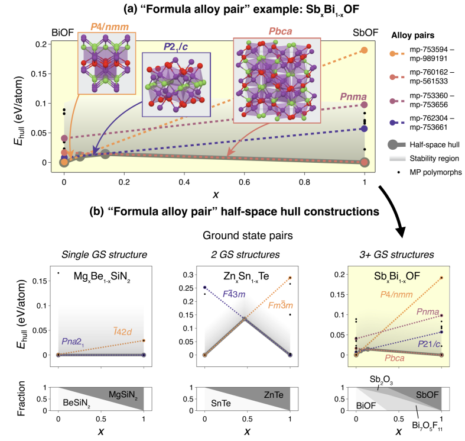
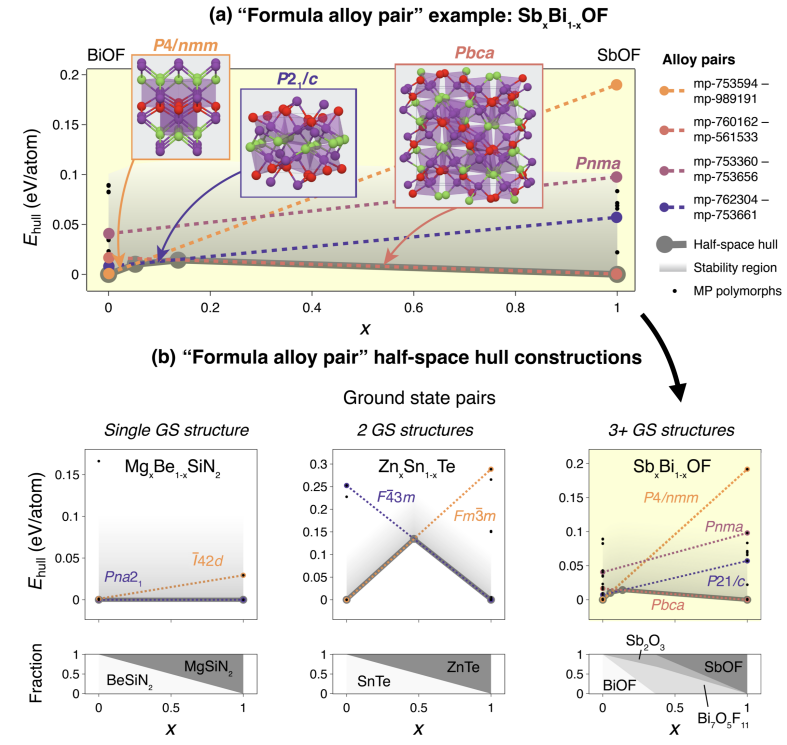
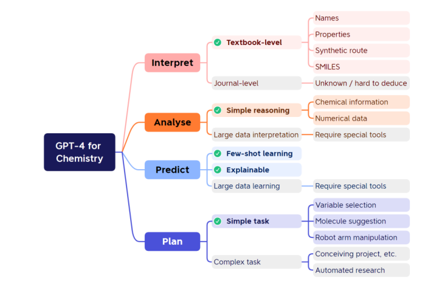
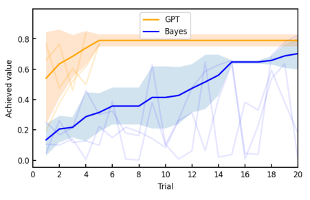
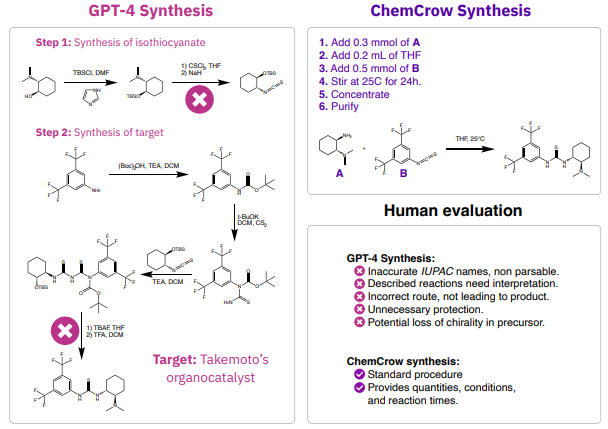
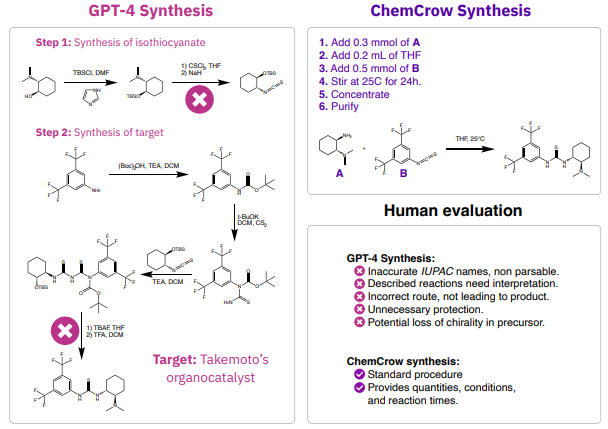

狙い
マテリアルインフォマティクス（Materials informatics）は、大量のデータと高度な計算手法を用いて、材料設計と性質予測を行う比較的新しい分野です。この分野は、機械学習、データマイニング、統計学などのインフォマティクスの手法を、材料科学に応用することを目的としています。具体的には、データ駆動型の材料設計、材料データベースとデータマイニング、材料の性質とプロセスの予測モデリング、シミュレーションと実験データの統合などを対象としています。
論文タイトル一覧
1. 結晶合金の可調整な物性を計算的にスクリーニングする方法
・既存の材料データベースから、結晶構造が類似している化合物の組み合わせを自動的に探索し、可能な合金や固溶体を提案するフレームワークとオープンソースコードを開発した。
・Materials Projectデータベースにこのフレームワークを適用し、60万以上のユニークな「合金ペア」や1万以上の「合金系」を作成し、公開した。これらのデータは、物性の可調整性を探索するために利用できる。
・合金ペアや合金系の可視化や分析のために、新しい手法を提案した。例えば、半空間ハル法を用いて、合金の熱力学的安定性や相変化を推定したり、格子定数やバンドギャップなどの物性をプロットしたりした。
・このフレームワークを応用して、p型透明導電体として有望な合金候補をスクリーニングした。その結果、従来の化合物スクリーニングでは見逃されていた可能性のある新しい候補を発見した。
・Materials Projectデータベースにこのフレームワークを適用し、60万以上のユニークな「合金ペア」や1万以上の「合金系」を作成し、公開した。これらのデータは、物性の可調整性を探索するために利用できる。
・合金ペアや合金系の可視化や分析のために、新しい手法を提案した。例えば、半空間ハル法を用いて、合金の熱力学的安定性や相変化を推定したり、格子定数やバンドギャップなどの物性をプロットしたりした。
・このフレームワークを応用して、p型透明導電体として有望な合金候補をスクリーニングした。その結果、従来の化合物スクリーニングでは見逃されていた可能性のある新しい候補を発見した。
コメント：学部生の時にp型透明超伝導体の探索研究をしていたが、このようなデータベースでの予測を基に、材料研究が出来ていたらもっと深く研究できたのではないかと思う。
DATE: 10 Apr 2023 (v3), 21 Jun 2022 (v1)
A method to computationally screen for tunable properties of crystalline alloys
Rachel Woods-Robinson et al. (University of California at Berkeley, USA)
arXiv:2206.10715 (cond-mat.mtrl-sci)
A method to computationally screen for tunable properties of crystalline alloys
Rachel Woods-Robinson et al. (University of California at Berkeley, USA)
arXiv:2206.10715 (cond-mat.mtrl-sci)
 

2. GPT-4を用いた化学研究の可能性と限界
・この文書は、GPT-4という大規模な言語モデルが化学研究にどのように応用できるかを検証したものである。
・GPT-4は、有機化学、化学情報学、数学、物理化学などの分野において、一般的な教科書レベルの知識を持っていることが示された。
・GPT-4は、少量のデータから新しい知識を学習し、推論問題や説明変数の選択、沸点や多変数関数の探索などのタスクに対処できることが示された。
・GPT-4は、分子構造や実験データなどの非言語データの扱いに課題があり、専門的な内容や最新の情報に対応できない場合があることが示された。
・GPT-4は、有機化学、化学情報学、数学、物理化学などの分野において、一般的な教科書レベルの知識を持っていることが示された。
・GPT-4は、少量のデータから新しい知識を学習し、推論問題や説明変数の選択、沸点や多変数関数の探索などのタスクに対処できることが示された。
・GPT-4は、分子構造や実験データなどの非言語データの扱いに課題があり、専門的な内容や最新の情報に対応できない場合があることが示された。
コメント：GPTを用いた科学研究の有用性と限界の一例を見れて大変参考になった。非言語データの扱いへの対応の向上により、GPT-4を用いた自動化実験技術の普及にも期待したい。
関連記事：Zhichu Ren et al., Nature Reviews Materials (2023)：AIとアクティブラーニングを用いた自律実験の課題と展望
関連記事：Zhichu Ren et al., Nature Reviews Materials (2023)：AIとアクティブラーニングを用いた自律実験の課題と展望
DATE: 5 Jun 2023
Prompt engineering of GPT-4 for chemical research: what can/cannot be done?
Kan Hatakeyama-Sato et al. (Tokyo Institute of Technology, Japan)
10.26434/chemrxiv-2023-s1x5p
Prompt engineering of GPT-4 for chemical research: what can/cannot be done?
Kan Hatakeyama-Sato et al. (Tokyo Institute of Technology, Japan)
10.26434/chemrxiv-2023-s1x5p


3. 化学ツールを組み込んだ大規模言語モデル：ChemCrowという化学エージェントの開発と評価
・大規模言語モデル（LLM）と化学分野の専門的なツールを統合することで、有機合成、薬物発見、材料設計などの化学関連のタスクを自動的に解決することができる化学エージェント（ChemCrow）を開発した。
・ChemCrowは、LLMに与えられたタスクとツールのリストから、思考・行動・観察の形式で自律的な推論プロセスを展開し、最終的な回答に到達する。ツールは、LLMが化学的に正確かつ効率的な情報を得るために必要な場合に呼び出される。
・ChemCrowは、GPT-4という最新のLLMを用いて、さまざまな難易度の14個のタスクに対して評価された。専門家による評価では、ChemCrowはGPT-4よりも化学的な正確さ、推論の質、タスクの完了度において優れていることが示された。特に複雑なタスクでは、ChemCrowはGPT-4が苦手とする化学的な知識や理解をツールを通して補うことができた。
・ChemCrowの開発と利用には、二重使用や安全性や倫理性などの潜在的なリスクが伴うことを認識し、それらを軽減するための戦略を提案した。例えば、危険な物質や反応に対しては警告やエラーを出すツールを組み込んだり、人間のフィードバックやレビューを求めたりすることである。
・ChemCrowは、LLMに与えられたタスクとツールのリストから、思考・行動・観察の形式で自律的な推論プロセスを展開し、最終的な回答に到達する。ツールは、LLMが化学的に正確かつ効率的な情報を得るために必要な場合に呼び出される。
・ChemCrowは、GPT-4という最新のLLMを用いて、さまざまな難易度の14個のタスクに対して評価された。専門家による評価では、ChemCrowはGPT-4よりも化学的な正確さ、推論の質、タスクの完了度において優れていることが示された。特に複雑なタスクでは、ChemCrowはGPT-4が苦手とする化学的な知識や理解をツールを通して補うことができた。
・ChemCrowの開発と利用には、二重使用や安全性や倫理性などの潜在的なリスクが伴うことを認識し、それらを軽減するための戦略を提案した。例えば、危険な物質や反応に対しては警告やエラーを出すツールを組み込んだり、人間のフィードバックやレビューを求めたりすることである。
コメント：GPT-4を用いた最近注目される材料設計ツール。人間言語と機械言語を繋ぐ材料設計の実現に期待。マテリアルズインフォマティクスは有機よりも無機の方が進んでいる理解であったが、言語モデルを利用したツールは有機からスタートするのは少し驚き。
DATE: 21 Jun 2023 (v4), 11 Apr 2023 (v1)
Augmenting large language models with chemistry tools
Andres M. Bran et al. (Laboratory of Artificial Chemical Intelligence (LIAC), ISIC, EPFL, Switzerland)
arXiv:2304.05376 (chem-ph)
Augmenting large language models with chemistry tools
Andres M. Bran et al. (Laboratory of Artificial Chemical Intelligence (LIAC), ISIC, EPFL, Switzerland)
arXiv:2304.05376 (chem-ph)
 
